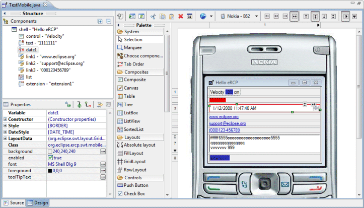
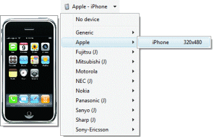
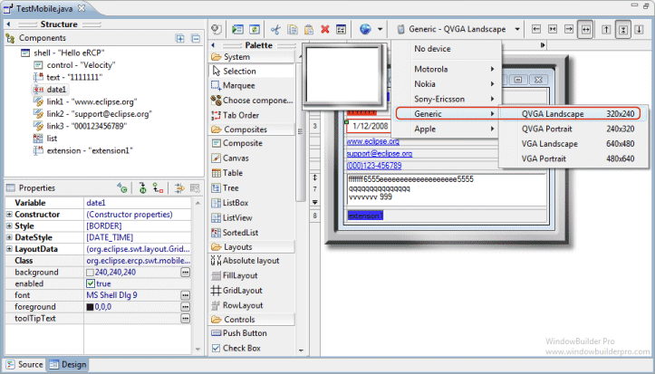
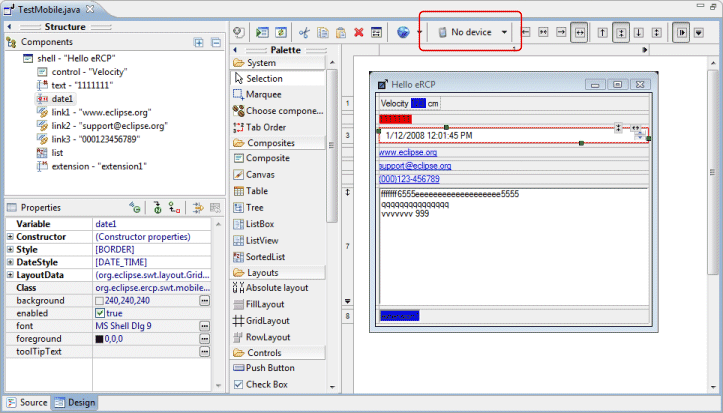

|  eRCP Designer includes a device preview mode where you can see the layout of your components as they would appear on a given device. Depending on the layout manager used, the widgets will resize themselves to conform to the exact screen dimensions of the selectedd device. The screen size is fixed based on the device and cannot be changed. The Device Menu drops down from the toolbar and shows all of the categories and devices configured on the eRCP > Mobile Devices preference page. Each device shows its name as well as its display size in pixels. As each device is selected in the menu, a thumbnail view of the device appears to the left of the menu to make it easy see what each device looks like. In addition to various real devices, the menu also includes a list of generic QVGA (320 x 240) and VGA (640 x 480) devices as well as a "no device" option which takes eRCP Designer out of device preview mode.
Generic DevicesMultiple generic devices are provides in landscape and portrait mode in two sizes, QVGA (320 x 240) and VGA (640 x 480).  No DeviceSelecting "No device" from the Device Menu takes eRCP Designer out of device preview mode.  |